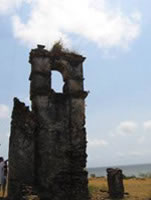
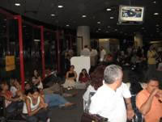

MARAJÓ
“... tínhamos que voltar para votar, mas acabamos ‘fechando’ com os búfalos.”
A gravação da semifinal do Prêmio “Escrevendo o Futuro” para a Fundação Roberto Marinho, em Belém, terminaria naquela noite. Os controladores de vôo já tinham dado início à “Operação Padrão”, greve branca deflagrada depois do maior acidente aéreo do país e que transformou em absoluto caos as salas de embarque dos principais aeroportos brasileiros. Tormenta na vida dos milhões que dependiam de avião para qualquer coisa naquele momento, e naquele momento, especificamente, tormenta na vida de brasileiros que dependiam de um vôo para voltar para casa cansados, com a sagrada saudade da comida da mãe, do travesseiro, do amor ou do filho, sem contar que esse bando de gente também precisava voltar (ou ir) para votar pra presidente, governador, deputado... Ops...! Bem lembrado! Estávamos a poucas horas das eleições.
No nosso grupo éramos seis pessoas. Seis eleitores. Nenhum eleitor de Belém do Pará, neste caso, apenas seis criaturas que se viram diante de um impasse terrível: encarar o caos dos aeroportos para voltar? Viver horas de lamúria caída no chão de salas de embarque implorando respostas sobre horários de conexões improváveis, para votar? Como vou marcar meu vôo se tenho um bilhete ‘em aberto’ nas mãos? Quem garante o nosso embarque? O que acontece se eu não for? Pra que horas? Como é que faz?
Perguntas demais.
A situação nos parecia praticamente vencida por W.O., e seria injusto culpar os controladores de vôo por isso. Cedo cedo, bastava olhar a fila, vários eram os forasteiros não-eleitores de Belém, nem de parte alguma dali, num raio de pelo menos 500 quilômetros. Todos notoriamente na fila, empurrando ou puxando malas de rodinhas, mochilas nas costas, sandalhinhas no pé. Pareciam tranqüilos e felizes, alguns até manchados de branco no rosto de tanto filtro solar, e todos com um adesivo vermelho carimbado no peito. Não era crime de boca de urna. Era o nome da pousada.
E toma fila pra encarar a balsa, fila pra disputar bom lugar nela, algo em torno de mais ou menos 600 cidadãos brasileiros embarcando, acomodando a bunda em bom lugar embaixo de – tomara! – 600 coletes salva-vidas laranjas, muitos ainda empoeirados e no plástico. Bom sinal. Todos, eleitores locais, eleitores forasteiros e salva-vidas laranjas atravessando o rio Pará, de Belém até a Ilha de Marajó, 3 horas rio afora, e era claro que a esmagadora maioria viajava sim, para exercer o sagrado poder do voto. Descobrimos ali, na conversa com o comunicador rural que vive de traduzir manuais técnicos para a gente que lida a terra, e no crochê preguiçoso da senhora magricela (no qual tracei 3 pontos e hoje – inveje! – moro em Marajó!) que a balsa do capitão Marcos é a mais rápida, e que Marajó... tem 13 municípios!
O primeiro dia foi de espanto com tanta informação. A multidão no desembarque descendo avassaladaroramente, malas pela ‘janela’, a pressa disputando tempo a tempo um lugar, agora no ônibus. Faltam ônibus também em Marajó.
O restante do tempo vivemos com uma leve e estranha sensação por se estar no topo do mapa. Exaltamos a gostosura do vento constante, a tranqüilidade, a temperatura da água, o queijo de búfala, a arte marajoara, o artesanato, o couro de filhotes vendido tristemente, e turisticamente, e os búfalos, claro. Búfalos e urubus.
A calmaria das cidades é porque os ilhéus fazem de Marajó, ao mesmo tempo, habitada e deserta.
Marajó tem mais búfalos que gente.
–––––––––––––––––––––––––––––––––––––––
O domingo de eleição foi em Joanes, praia de rio de grande horizonte, amplitude oceânica (ou seria amazônica?), água morna. Ali nosso comunicador rural tem casa. Foi ali o porto do descobrimento (por Joanes, claro!) da maior ilha fluvial do planeta!

Ainda é possível encontrar ruínas de construções feitas pelos primeiros colonizadores, mas estão em completo abandono, vá antes que acabem.
A escola municipal onde justificamos nosso voto está a cerca de 100 metros de distância da costa e do que resta de um antigo mosteiro.
Foto: Raquel Boechat / Acervo RBC.
–––––––––––––––––––––––––––––––––––––––
Fizemos amigos na viagem, e a essa altura éramos 11 forasteiros, só no nosso grupo. Na seção que parte de nós justificou o voto, 2 eram do Maranhão, 2 de São Paulo e um do Rio de Janeiro.
Das nossas mãos, nem Lula nem Alckmin. –––––––––––––––––––––––––––––––––––––––
Tínhamos que voltar para votar, mas acabamos ‘fechando’ com os búfalos.
Entre os forasteiros na fila da balsa, dos que não votariam, estávamos lá..

ENQUANTO ISSO... no aeroporto de Brasília...
Foto: Raquel Boechat / Acervo RBC.
Volta de Marajó, sala de embarque do aeroporto de Brasília, noite de 2ª feira, 30/11, Lula Presidente de novo. Em plena “Operação padrão”, aquele bando de gente caída no chão, filas intermináveis, funcionários das empresas aéreas, seguidamente, anunciando nova plataforma, nova porta, novo horário, e não é que entre uma informação e outra pelo alto-falante, POR DUAS VEZES deram play na gravação (famosa por ter circulado pela internet) que tem uma voz masculina entoando afeminadamente uma mensagem mais ou menos assim: “Meu nome é Joanete, moro num kitinete, tenho um chevete 87, mais informações 3344447, falar com Joanete.”
Não preciso dizer nada!!!
Valeu pra distrair.
Faça contato! |
|